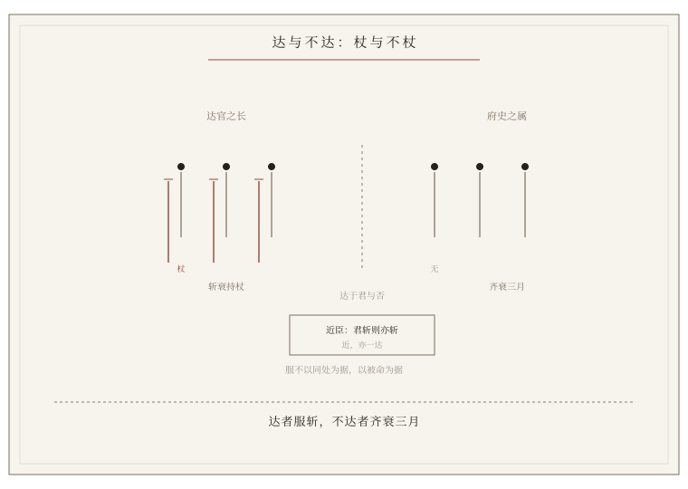

檀弓下 · 四·二 · 第 327 课
公之丧，诸达官之长杖。
说什么事：诸侯之丧，凡受君亲命之官，其长（正职）持杖。府史之属不被君命者，只服齐衰三月，不杖。
落在哪一层：以「达」量服。论「服跟着『达不达』走，不跟着官大小走」。
为何编在此位：三百二十六课以「乘」量殇，此课以「达」量服——同为数目之礼，而此课的标准是一件看不见的事：君知不知道你。
【经】公之喪，諸達官之長杖。
【注】謂君所命，雖有官職，不達於君，則不服斬。
【疏】此一节论臣为君杖法。公者，五等诸侯也；诸者，非一之辞；达官，谓国之卿大夫士被君命者也；既被君命，故称「达官」也；既达于官，而贵有其职，此对不达者为长，故云「长」也；若遭君丧，则备服衰杖，故云「诸达官之长杖」也；不云「衰」，从可知也。注「谓君至服斩」：「不达于君」，谓府史之属也；贱不被命，是不达于君也；不服斩衰，但服齐衰三月耳；故《丧服》齐衰三月章有「庶人为国君」。若其近臣阍寺之属，虽无爵命，但嗣君服斩，则亦服斩，与此异也。
公 五等诸侯。
达官 被君亲命之官。达，谓名达于君。
长 正职、长官，对「属」而言。
杖 丧杖。斩衰持杖。
府史之属 官署中的属吏，不被君命。
阍寺 守门与近侍之臣。
诸侯之丧，凡被君亲命的官，其长官持杖。
六字，注一句，疏一段。要义三层：谁杖、为什么不写「衰」、近臣为何不同。
谁杖：「达官之长」——被君亲命者，且是正职。
不写「衰」：疏「不云衰，从可知也」。有杖必有衰，举其显者。
近臣不同：阍寺之属无爵命，但嗣君服斩，则亦服斩——「近臣，君服斯服矣」。
第一层 「达」：一件看不见的标准 达于君，谓君知其名、命其职。这是一件无法称量的东西，而礼用它定服。
礼的标准，多是这样：看似模糊，实则可判。你被君命过没有，有文书、有册命，可查。故「达」虽抽象，落到制度上却极硬。
今人以「职位高低」定亲疏，古人以「达不达」定亲疏。前者可量，后者可查；可量者争，可查者不争。
第二层 「长」：只及正职 经言「达官之长」，不及属。疏「对不达者为长」。
一个衙门里，长官杖，属吏不杖。同在一处办公，同受一个君，服却不同。礼在这里明说：服不以「同处」为据，以「被命」为据。
第三层 不云「衰」，举其显者 经只写「杖」不写「衰」。疏一句「从可知也」。
这是礼书的省文法：写最显的一件，其余可推。杖是手上之物，人人可见；衰在衣内，未必见。故举杖。
今人写规章，好求「全面」；古人写礼，求「可推」。全面者必冗，可推者简而严。
第四层 近臣的例外：近也是一种达 阍寺之属无爵命，按「达」的标准不该服斩；但嗣君服斩，他们亦服斩。疏引《丧服》传「近臣，君服斯服矣」。
所以「达」有两条路：一是被命（制度之达），二是在侧（位置之达）。两条都通，礼都认。
与今日何干 今人论「谁是自己人」，多以职级论。此节给的尺是「达」：君知道你、命过你，才算。职级高而不被知，仍是外人；位卑而在侧，反是近臣。
| 左 | 右 |
|---|---|
| 达官 | 被君亲命 |
| 长 | 正职，非属 |
| 杖 | 举其显者 |
| 衰 | 从可知 |
| 府史之属 | 齐衰三月，不杖 |
| 阍寺近臣 | 君斩则亦斩 |
| 达 | 制度之达 |
| 近 | 位置之达 |
画一处公庭，视点平视。庭上两列人相对而立：左列三人，各持一杖（杖高于肩），衣素；右列三人，无杖，衣亦素而略短。两列之间一道空地。远处一殿一角。只画衣与杖，不画人面、不写文字。赭色只用在左列三人杖头各一道。
